Game Consoles
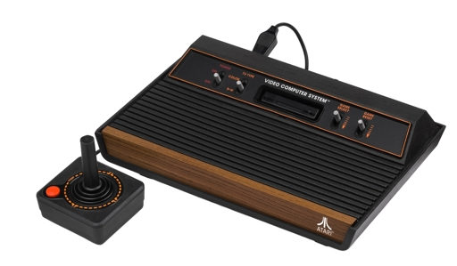
Learn how to program the Atari 2600 with dozens of fully commented examples. The built-in 6502 assembler runs as you type and flags any errors. Single step through your code and use our CPU Cycle Analyzer to develop that perfect kernel.
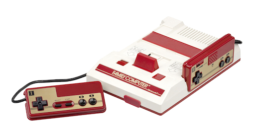
For a different kind of challenge, try programming the NES (aka Famicom) in C or assembler. Learn all about nametables, scrolling, sprites, NMIs and mappers. Browse video RAM, profile the CPU, and edit graphics in the Asset Editor.
Arcade Games
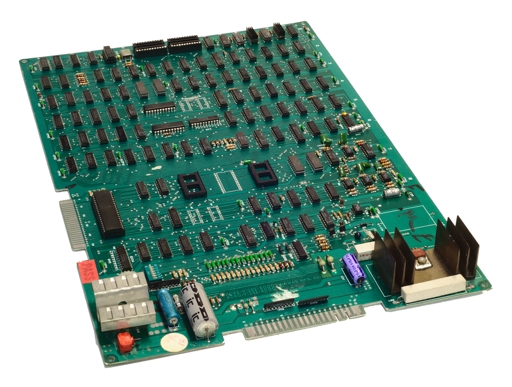
You can develop your own games on classic arcade game hardware, using our in-browser C compiler targeting the Z80 CPU. Learn how to control frame buffers, sprite engines, vector displays and sound chips. Use the included debugger to step through instructions, view memory, and disassemble machine code.
We simulate the hardware of actual arcade games in the browser. Supported architectures include VIC Dual (Sega/Gremlin), Midway 8080, Galaxian/Scramble (Namco), Atari Vector, and Williams.
Hardware Design
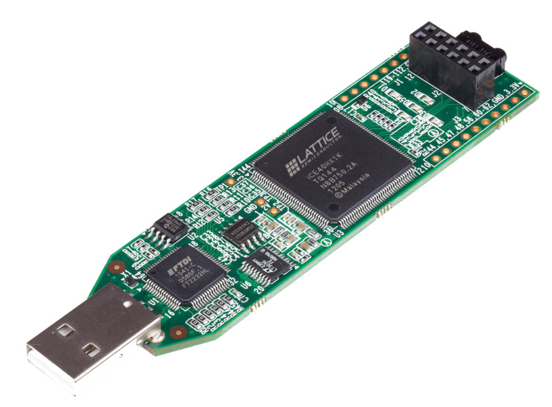
Use our Verilog IDE to design logic circuits in the browser. We'll run your design in real time in the browser, and show you the output on a simulated CRT. You can also slow down time and see the waveforms cycle-by-cycle.
Plenty of examples are included to teach logic programming, from simple counters and dividers all the way to custom CPUs and an 8-bit game platform. The book even shows you how to synthesize your code to the Lattice iCEstick and connect to a CRT or TV.
Supported Platforms
Atari 2600/VCS
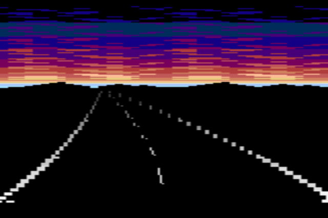
NES
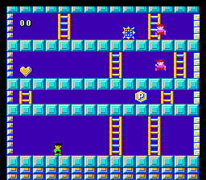
Verilog
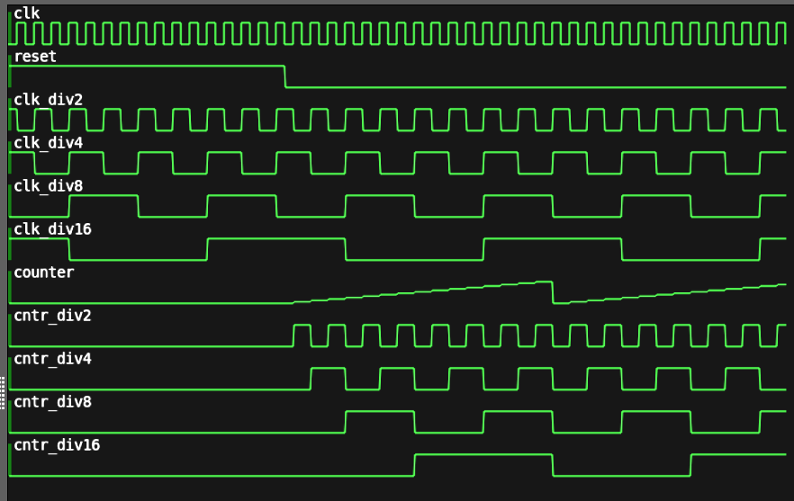
VIC Dual
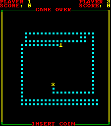
Midway 8080
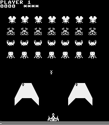
Galaxian/Scramble
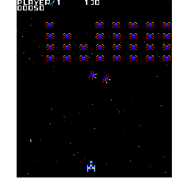
Atari Vector
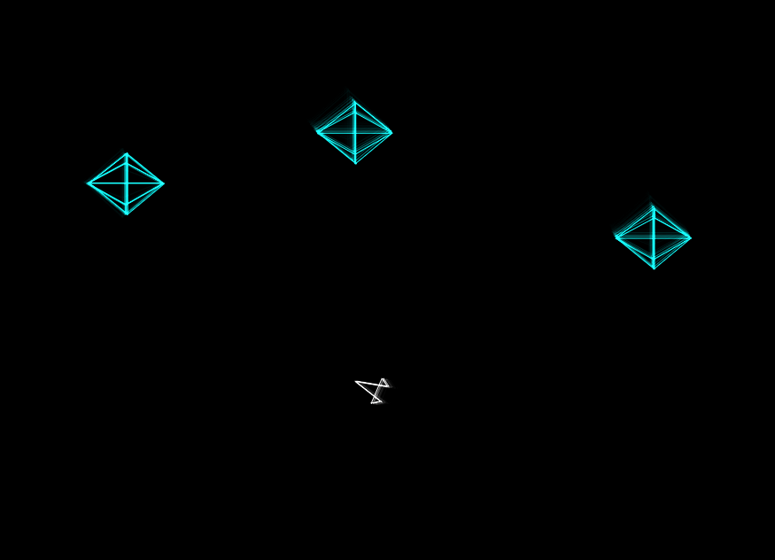
Williams
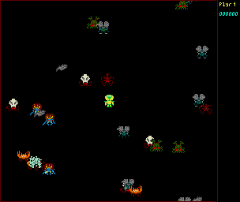
Apple ][+
ColecoVision
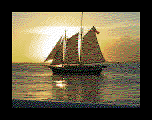
Sega Master System
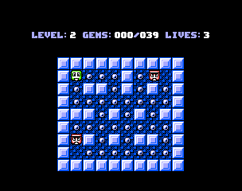
Bally Astrocade
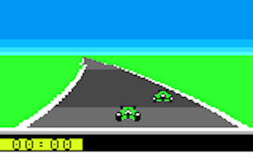
Atari 7800
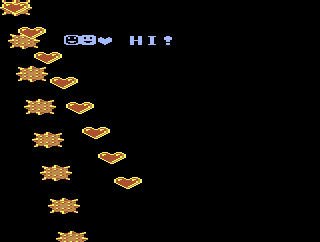
Commodore 64
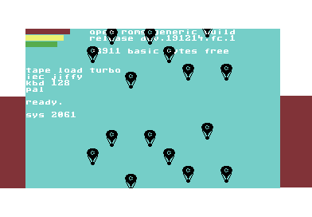
ZX Spectrum 48k
Make Your Own Pixel Art.
Transform your images into 8-bit formats right in your browser. Then export your new artwork to a 8bitworkshop project.
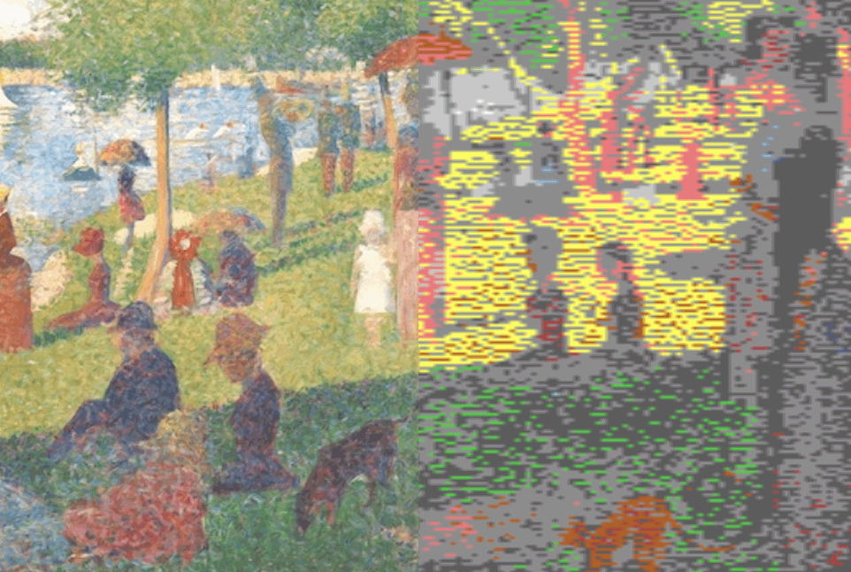
Donate
Book sales help support this site, but we accept donations too!
8bitworkshop depends on open-source developers for its many moving parts. A large portion of our Patreon income is donated to them.
Subscribe
Sign up for our Gumroad mailing list, and we'll email you about new releases, new books, and other fun stuff.